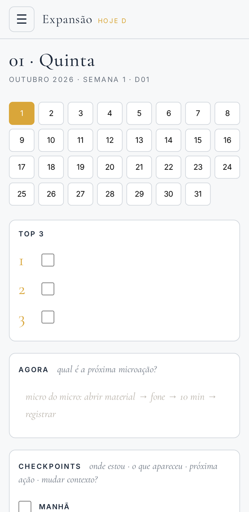
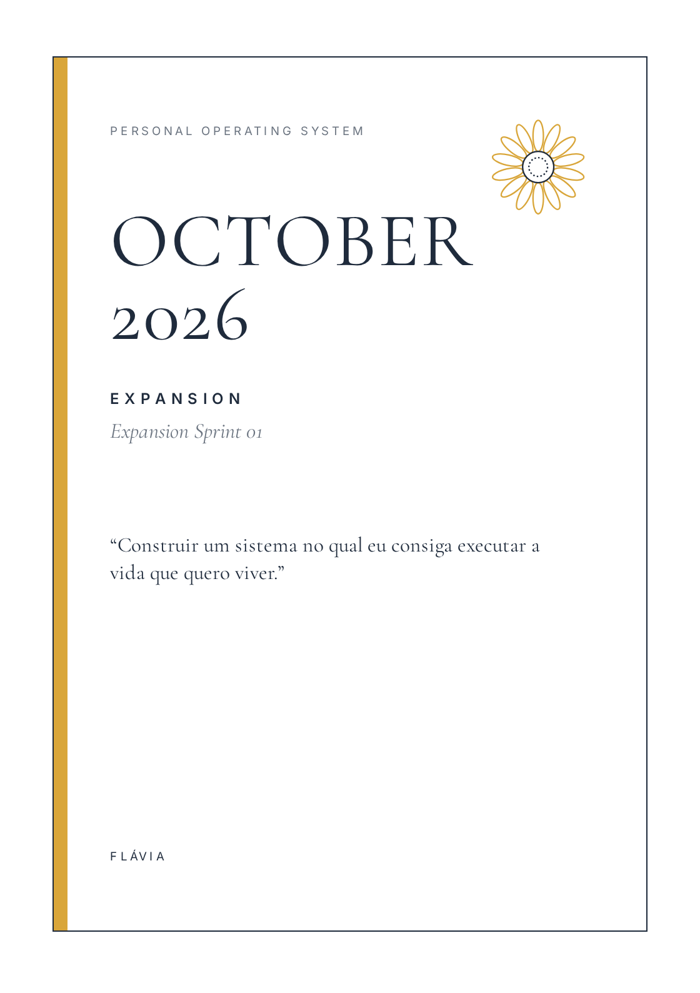
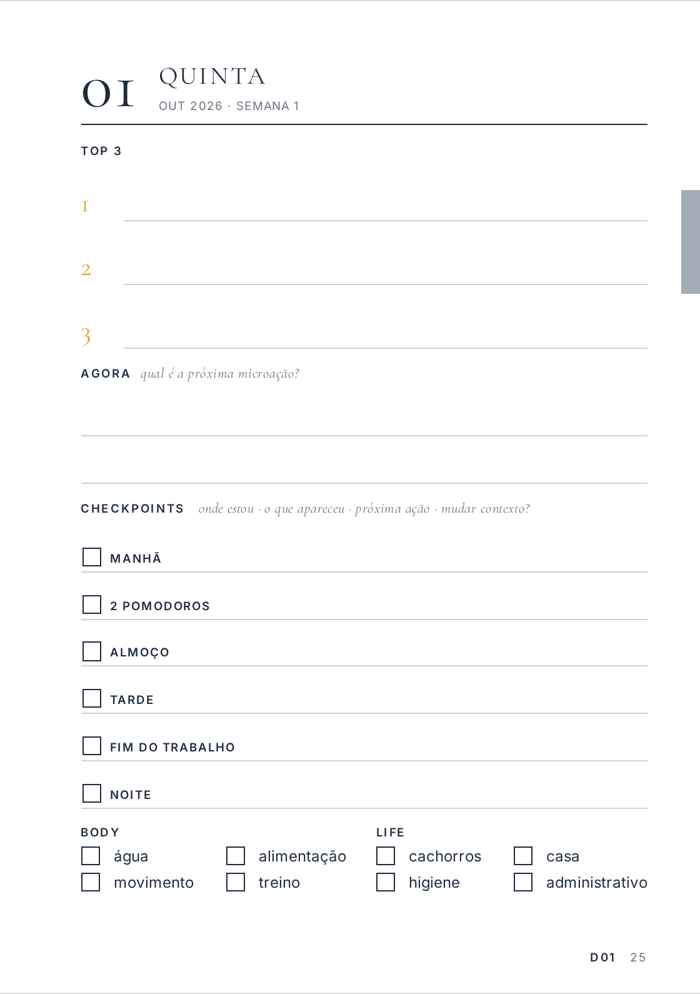
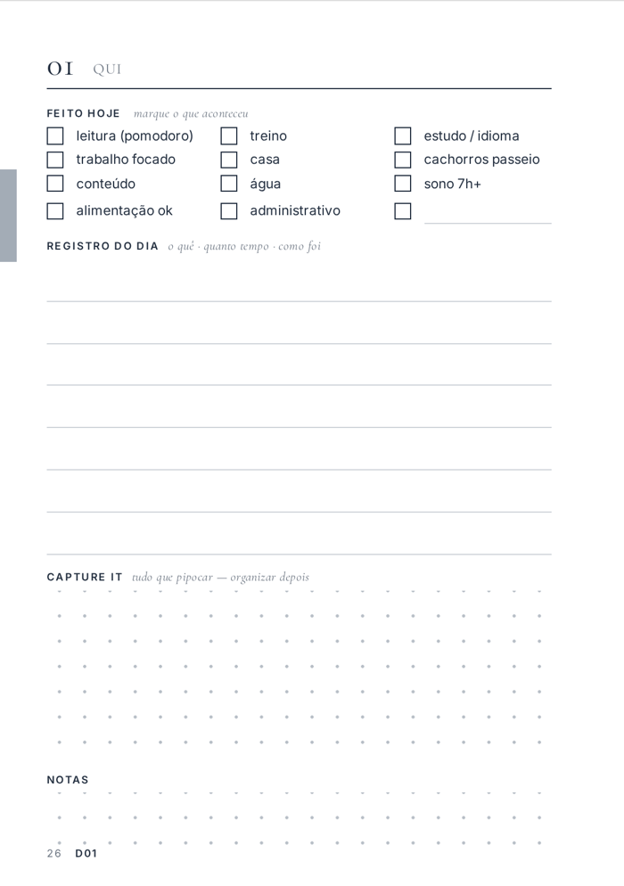
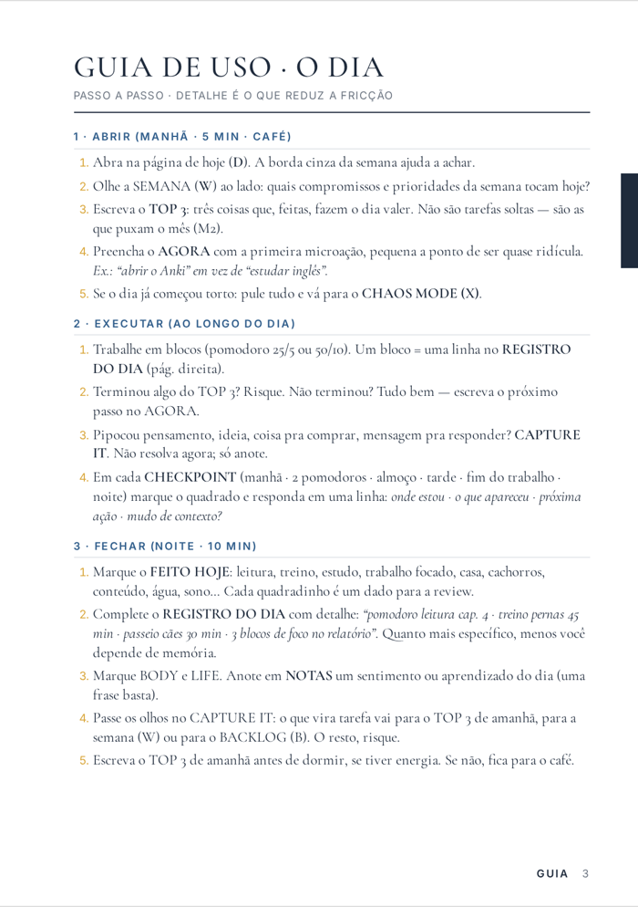
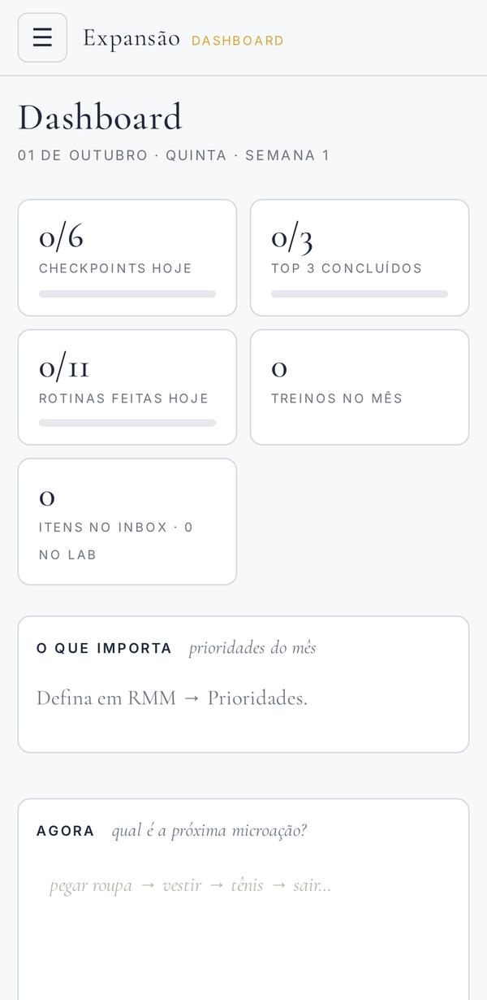

O Expansão é um planner de um mês por vez, em papel A5 e em app. Cada página tem uma função fixa: capturar o que aparece, escolher o que fazer agora, marcar o que foi feito e revisar no fim do mês. Foi pensado para pessoas com TDAH, mas serve para quem precisa de mais estrutura do que uma agenda comum dá.
Esta página explica o método. O app é de uso pessoal e os dados ficam no aparelho de quem usa.

Ao abrir, você sabe onde está, onde escrever e qual é o próximo passo. Tudo o que entra no planner passa por uma destas seis partes.
Metas do mês, projetos, compromissos e ideias têm página própria e sempre a mesma. Você não precisa lembrar onde anotou.
Todas as páginas têm um espaço Capture It. O que aparecer no meio de uma tarefa vai para lá e é organizado depois.
Visão do mês, planejamento de domingo, backlog e microtarefas. O guia diz o que vai em cada lugar para você não ter que decidir todo dia.
Top 3 do dia, um bloco Agora com o próximo passo pequeno e 6 checkpoints ao longo do dia (manhã, dois pomodoros, almoço, tarde, fim do trabalho, noite).
Checklist Feito hoje com leitura, treino, estudo, trabalho focado, casa, cachorros, água, sono e alimentação, mais sete linhas para o registro do dia.
Route Review no meio do mês e Monthly Review no fim. O que funcionou continua; o que travou é ajustado no mês seguinte.
No TDAH adulto o difícil costuma ser começar, manter o ritmo, lembrar do que ficou para depois, parar quando é hora e voltar depois de um dia ruim. Cada parte do planner responde a um desses pontos.
O bloco Agora pede o próximo passo concreto, do tipo "abrir o material e ler 10 minutos", em vez da tarefa inteira.
Seis paradas curtas no dia para responder: onde estou, o que apareceu, qual é o próximo passo. Se perdeu o fio, é aqui que retoma.
Ideia, tarefa ou preocupação vai para o Capture It na hora em que aparece, para não depender da memória.
Uma página para o dia que desandou: três perguntas e uma ação mínima para recomeçar de onde dá.
O checkpoint de fim do trabalho tem uma regra: anotar onde parou e fechar. Água, comida e sono ficam no checklist do dia.
No fim do mês você anota o que funcionou e o que travou. O System Lab transforma isso em mudanças para o mês seguinte.
De manhã, Top 3 e o primeiro passo. Durante o dia, pomodoros e checkpoints. À noite, marcar o Feito hoje e escrever o registro.
Planejamento da semana: prioridades, compromissos, treinos e accountability. Fechar a semana anterior leva uns 15 minutos.
RMM (Reunião Mensal de Metas) para abrir o mês, Route Review no meio e Monthly Review no fim. A RMM do mês seguinte já está no planner.
106 páginas, duas por dia. Linhas largas para letra grande.




Instala pelo navegador, funciona offline e guarda os dados no próprio aparelho. Serve para consultar e anotar quando o papel não está por perto.
